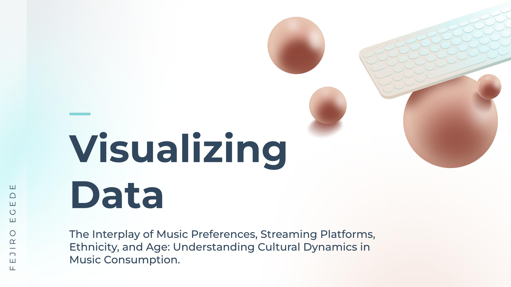

Work that tells a story
Six projects spanning mobile design, UX research, app audits, and data visualisation. Each one starts with a real problem and a real person.

Team Canada — Transform Podium
Sheridan College capstone with Team Canada. Investigated barriers to sports participation across 4 countries, conducted 8 one-on-one interviews, and co-designed an inclusive mobile sports events platform.
View case study →
Spot Free Car Wash
Field observation at a self-serve car wash revealed hidden friction. Designed a mobile app with QR bay connection, real-time monitoring, and Apple Watch hands-free control.
View case study →
Fanduel Redesign
Structured usability audit of the Fanduel sports betting app. Surfaced 8+ critical pain points across navigation, balance visibility, and bet management, then redesigned each one.
View case study →Anok Restaurant — Web Redesign
Redesigned a Toronto restaurant's digital presence from the ground up. Turned a conversion-killing site into a reservation-first experience through research, audit, and focused UI design.
View case study →
Food Choices Insights
A team research study exploring the psychological, cultural, and social factors that drive food decisions among GTA students. Qualitative interviews, literature review, hypothesis testing.
View case study →
Visualizing Data — Music, Culture & Streaming
An information design project exploring the interplay of music genre preferences, streaming platform usage, age, and ethnicity across the US. Three datasets, three hypotheses, one visual narrative.
View case study →